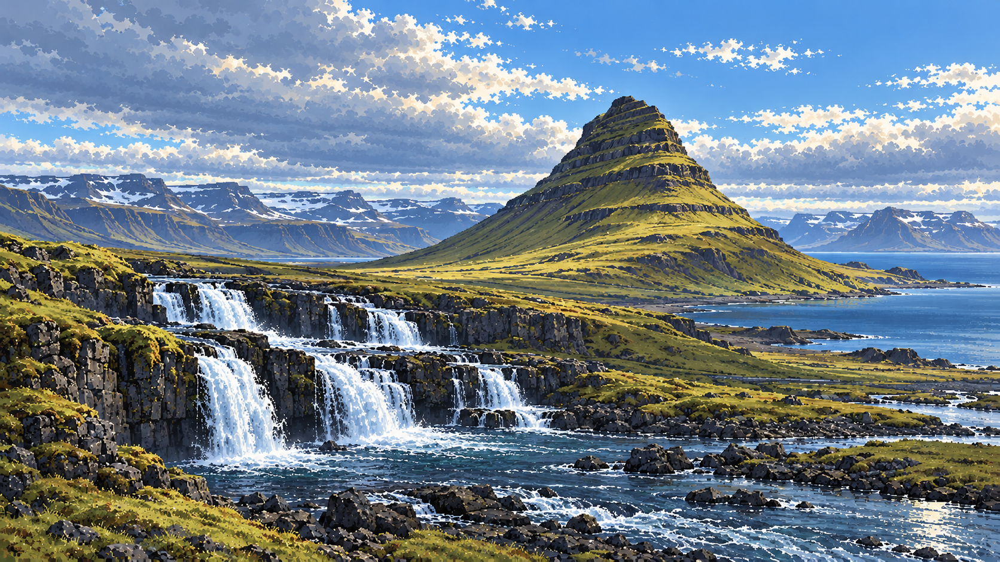
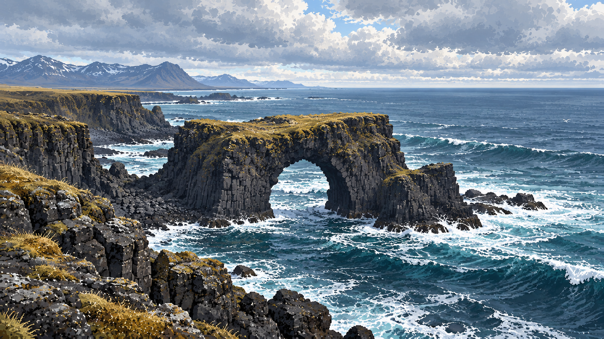
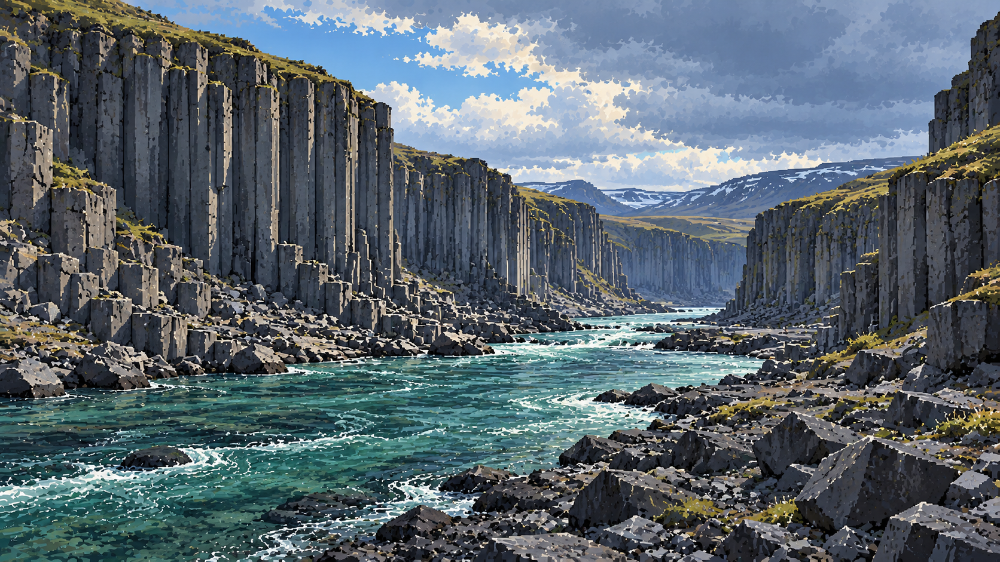
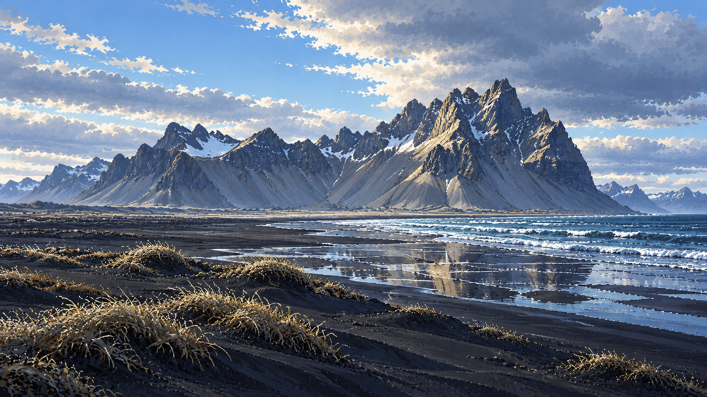
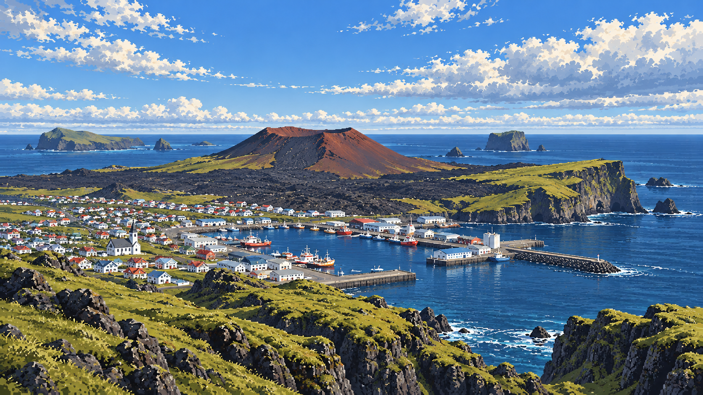
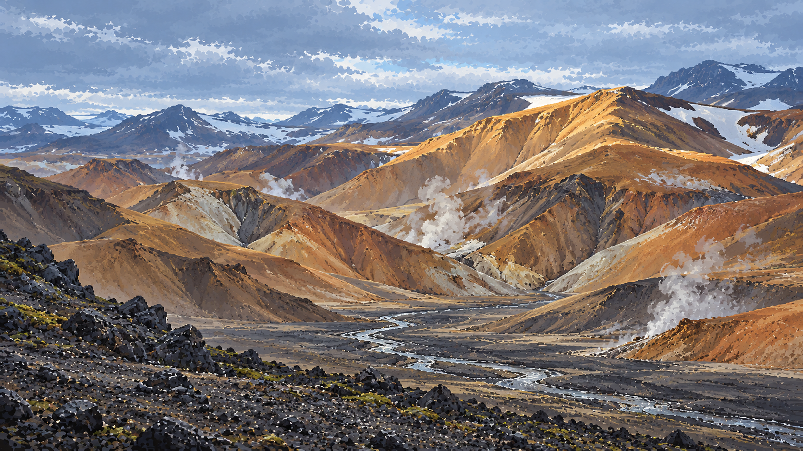

17Kirkjufell / 教会山Kirkjufell 高约463米，位于 Grundarfjörður 旁，外露岩层记录了当地的冰川地质历史；山脚附近有 Kirkjufellsfoss。查看生成提示词 ↗
18Arnarstapi / 阿尔纳斯塔皮海岸Arnarstapi 与 Hellnar 之间分布着 Hellnahraun 熔岩地，海浪持续塑造岸边崖壁、礁石和奇特岩形。查看生成提示词 ↗
22Stuðlagil / 斯图德拉吉尔玄武岩峡谷Jökla（Jökulsá á Dal）河穿过 Jökuldalur 的 Stuðlagil 峡谷，河道两侧露出成列的柱状玄武岩。查看生成提示词 ↗
23Vestrahorn / 韦斯特拉角山Vestrahorn 高约454米，主体为未分层的侵入岩，以辉长岩为主、含花岗斑岩；山前的 Stokksnes 有黑沙海岸。查看生成提示词 ↗
26Heimaey / 海梅岛Heimaey 是 Vestmannaeyjar 群岛最大且有人长期居住的岛屿；1973年喷发形成的 Eldfell 和熔岩覆盖改变了岛上地貌。查看生成提示词 ↗
27Kerlingarfjöll / 凯德灵加山Kerlingarfjöll 是中央高地的火山山脉，拥有大片流纹岩地貌和高温地热区；Hveradalir 可见泥泉、热池、喷汽孔及矿物色沉积。查看生成提示词 ↗